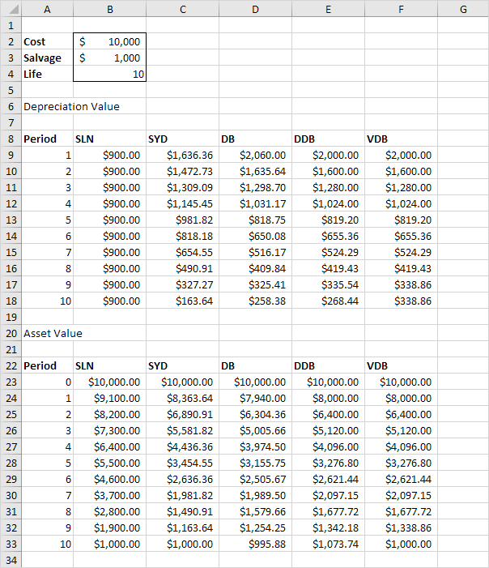
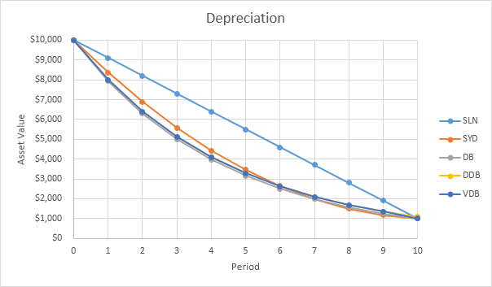
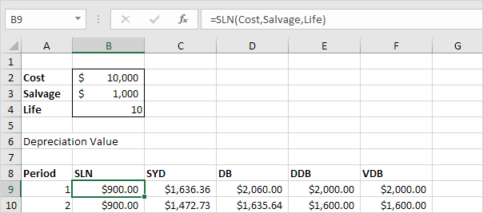
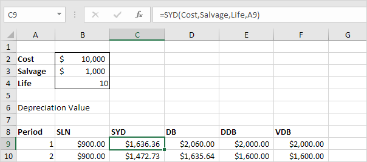
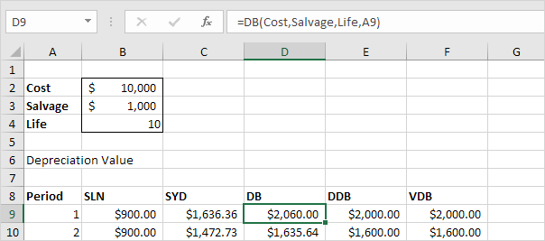
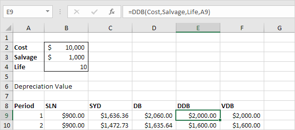
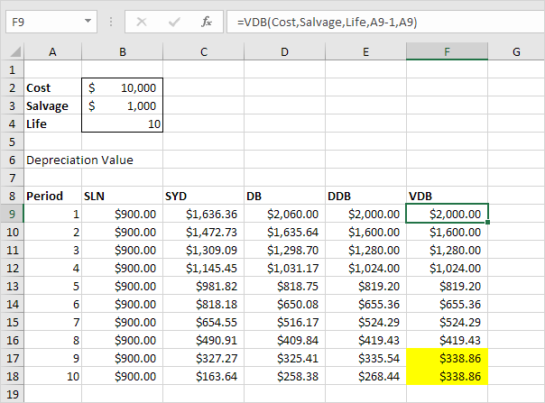

Depreciation
Excel offers five different depreciation functions. We consider an asset with an initial cost of $10,000, a salvage value (residual value) of $1000 and a useful life of 10 periods (years). Below you can find the results of all five functions. Each function will be explained separately in the next 5 paragraphs.

Most assets lose more value in the beginning of their useful life. The SYD, DB, DDB and VDB functions have this property.

SLN
The SLN (Straight Line) function is easy. Each year the depreciation value is the same.

The SLN function performs the following calculation. Depreciation Value = (10,000 - 1,000) / 10 = 900.00. If we subtract this value 10 times, the asset depreciates from 10,000 to 1000 in 10 years (see first picture, bottom half).
SYD
The SYD (Sum of Years' Digits) function is also easy. As you can see below, this function also requires the period number.

The SYD function performs the following calculations. A useful life of 10 years results in a sum of years of 10 + 9 + 8 + 7 + 6 + 5 + 4 + 3 + 2 + 1 = 55. The asset loses 9000 in value. Depreciation value period 1 = 10/55 * 9000 = 1,636.36. Depreciation value period 2 = 9/55 * 9000 = 1,472,73, etc. If we subtract these values, the asset depreciates from 10,000 to 1000 in 10 years (see first picture, bottom half).
DB
The DB (Declining Balance) function is a bit more complicated. It uses a fixed rate to calculate the depreciation values.

The DB function performs the following calculations. Fixed rate = 1 - ((salvage / cost) ^ (1 / life)) = 1 - (1000/10,000)^(1/10) = 1 - 0.7943282347 = 0.206 (rounded to 3 decimal places). Depreciation value period 1 = 10,000 * 0.206 = 2,060.00. Depreciation value period 2 = (10,000 - 2,060.00) * 0.206 = 1635.64, etc. If we subtract these values, the asset depreciates from 10,000 to 995.88 in 10 years (see first picture, bottom half).
Note: the DB function has a fifth optional argument. You can use this argument to indicate the number of months to go in the first year (If omitted, it is assumed to be 12). For example, set this argument to 9 if you purchase your asset at the beginning of the second quarter in year 1 (9 months to go in the first year). Excel uses a slightly different formula to calculate the depreciation value for the first and last period (the last period represents an 11th year with only 3 months).
DDB
The DDB (Double Declining Balance) function is easy again. However, sometimes you don't reach the salvage value when you use this function.

The DDB function performs the following calculations. A useful life of 10 years results in a rate of 1/10 = 0.1. Because this function is called Double Declining Balance we double this rate (factor = 2). Depreciation value period 1 = 10,000 * 0.2 = 2,000.00. Depreciation value period 2 = (10,000 - 2,000.00) * 0.2 = 1600.00, etc. As said earlier, sometimes you don't reach the salvage value when you use this function. In this example, if we subtract the depreciation values, the asset depreciates from 10,000 to 1073.74 in 10 years (see first picture, bottom half). However, read on to fix this.
Note: the DDB function has a fifth optional argument. You can use this argument to use a different factor.
VDB
The VDB (Variable Declining Balance) function uses the DDB (Double Declining Balance) method by default. The 4th argument indicates the starting period, the 5th argument indicates the ending period.

The VDB function performs the same calculations as the DDB function. However, it switches to Straight Line calculation (yellow values) to make sure you reach the salvage value (see first picture, bottom half). It only switches to Straight Line calculation when Depreciation Value, Straight Line is higher than Depreciation Value, DDB. In period 8, Depreciation Value, DDB = 419.43. We still have 2097.15 - 1000 (see first picture, bottom half) to depreciate. If we use the Straight Line method this results in 3 remaining depreciation values of 1097.15 / 3 = 365.72. Depreciation Value, Straight Line is not higher so we do not switch. In period 9, Depreciation Value, DDB = 335.54. We still have 1677.72 - 1000 (see first picture, bottom half) to depreciate. If we use Straight line method this results in 2 remaining depreciation values of 677.72 / 2 = 338.86. Depreciation Value, Straight Line is higher so we switch to Straight Line calculation.
Note: the VDB function is much more versatile than the DDB function. It can calculate the depreciation value of multiple periods. In this example, =VDB(Cost,Salvage,Life,0,3) reduces to 2000 + 1600 + 1280 = 4880. It contains a 6th and 7th optional argument. You can use the 6th argument to use a different factor. If you set the 7th argument to TRUE it does not switch to Straight Line calculation (the same as DDB).